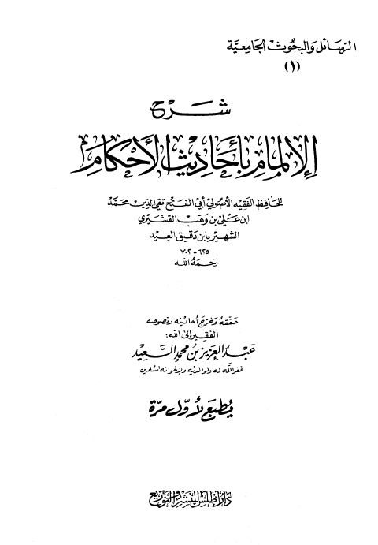

Downloads need an internet connection.
شرح الإلمام بأحاديث الأحكام المجلدة الثانية- ت. السعيد
Authors: ابن دقيق العيد
Editors: عبد العزيز بن محمد السعيد
Publishers: دار أطلس الخضراء
**▫️ العنوان: شرح الإلمام بأحاديث الأحكام المجلدة الثانية- ت. السعيد** ▪️ المؤلف: #تقي_الدين_ابن_دقيق_العيد ▫️ المحقق: #عبد_العزيز_بن_محمد_السعيد ▪️ الناشر: #دار_أطلس_للنشر_والتوزيع ▫️ تاريخ النشر: 1418هـ 1997م ▪️ بلد النشر: الرياض، #السعودية ▫️ الطبعة: 1 ▪️ عدد الأجزاء: 2 ▫️ الصفحات: 906 ▪️ نوع الوعاء: #كتاب ▫️ التصنيف الرئيسي: #الحديث_وعلومه ▪️ التصنيف الفرعي: #شروحات ۪